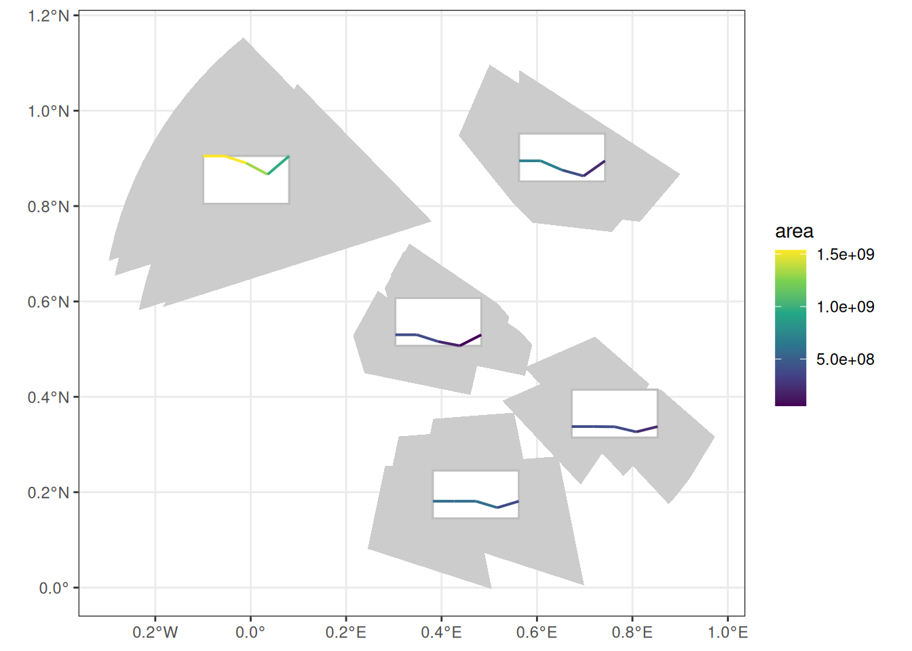
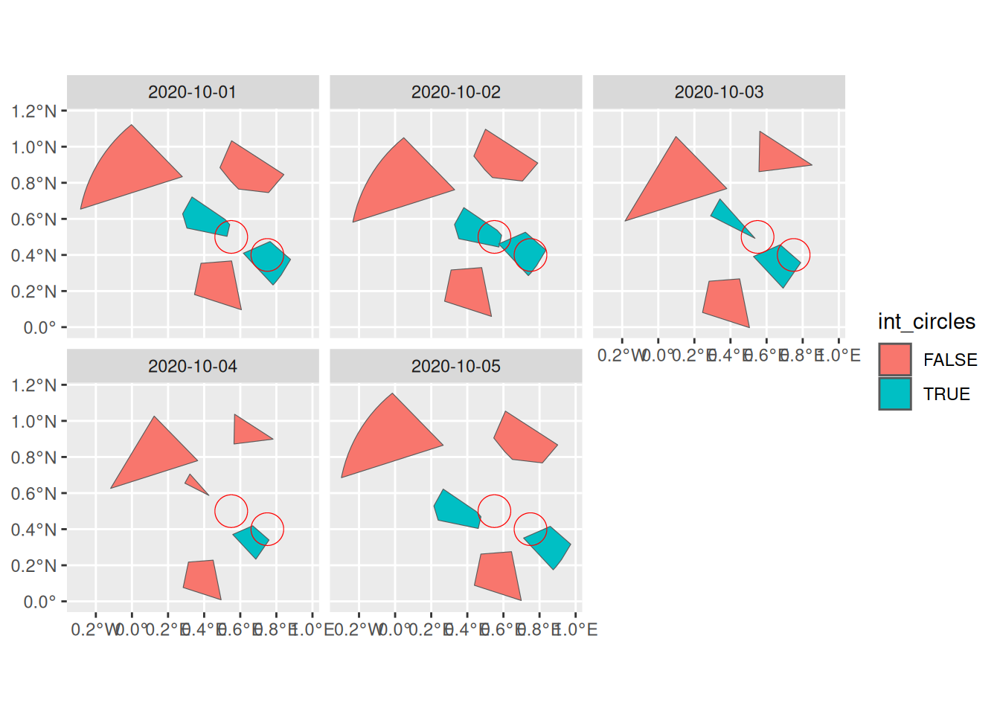

The classes provided in post are designed so that the majority of functions and methods available for cubble or stars objects are still applicable to post_* objects, while keeping the post class and attributes in the process.
The main compatibility functions are presented in this vignette.
cubble compatibility
Objects of class post_table are compatible with most of cubbles methods as presented below.
Spatial and temporal faces
The main functionalities of cubble are the ability to do analyses on the spatial or on the temporal faces of the vector data cube. For this, the functions cubble::face_spatial() and cubble::face_temporal() are provided. The spatial face is the default state of a cubble object.
tab = as_post_table(polygons)
face_spatial(tab)
#> ℹ The cubble is already in the nested form
#> # cubble: key: gid [5], index: datetime, nested form, [sf]
#> # spatial: [-0.01, 0.2, 0.76, 0.9], WGS 84
#> # temporal: datetime [date], geometry [POLYGON [°]]
#> gid long lat geom_sum ts
#> * <chr> <dbl> <dbl> <POINT [°]> <list>
#> 1 a 0.653 0.902 (0.6526028 0.901785) <sf [5 × 2]>
#> 2 b -0.00954 0.855 (-0.009536052 0.8549277) <sf [5 × 2]>
#> 3 c 0.393 0.557 (0.3932031 0.5571231) <sf [5 × 2]>
#> 4 d 0.763 0.365 (0.7627982 0.3647986) <sf [5 × 2]>
#> 5 e 0.472 0.195 (0.4718622 0.1952443) <sf [5 × 2]>
face_temporal(tab)
#> # cubble: key: gid [5], index: datetime, long form
#> # temporal: 2020-10-01 -- 2020-10-05 [1D], no gaps
#> # spatial: long [dbl], lat [dbl], geom_sum [POINT [°]]
#> gid datetime geometry
#> * <chr> <date> <POLYGON [°]>
#> 1 a 2020-10-01 ((0.5474949 0.8088912, 0.4874872 0.8838477, 0.5520055 1.032…
#> 2 a 2020-10-02 ((0.4961102 0.8728385, 0.4361026 0.947795, 0.5006209 1.0966…
#> 3 a 2020-10-03 ((0.5578801 0.8616378, 0.5623908 1.085448, 0.8520717 0.8981…
#> 4 a 2020-10-04 ((0.5652241 0.872057, 0.5685463 1.036898, 0.7819022 0.89897…
#> 5 a 2020-10-05 ((0.6063791 0.8304178, 0.5463715 0.9053744, 0.6108898 1.054…
#> 6 b 2020-10-01 ((0.2791708 0.8337388, -0.2847997 0.6540191, -0.2825181 0.6…
#> 7 b 2020-10-02 ((0.3298312 0.7612067, -0.2341393 0.5814869, -0.2318577 0.5…
#> 8 b 2020-10-03 ((0.3796448 0.767853, -0.1843257 0.5881332, 0.09777458 1.05…
#> 9 b 2020-10-04 ((0.3642467 0.779727, -0.1182199 0.6259799, 0.1231118 1.026…
#> 10 b 2020-10-05 ((0.2665368 0.8649996, -0.2974337 0.6852798, -0.2951521 0.6…
#> # ℹ 15 more rowsAttribute extraction
Extracting cubble attributes is also possible. cubble follows the attributes from tsibble objects, where the key is equivalent to the group identifier and the index is equivalent to the temporal column in post_table objects.
cubble::coords(tab)
#> [1] "long" "lat"
cubble::index(tab)
#> datetime
tsibble::key(tab)
#> [[1]]
#> gid
cubble::spatial(tab)
#> Simple feature collection with 5 features and 3 fields
#> Geometry type: POINT
#> Dimension: XY
#> Bounding box: xmin: -0.009536052 ymin: 0.1952443 xmax: 0.7627982 ymax: 0.901785
#> Geodetic CRS: WGS 84
#> # A tibble: 5 × 4
#> gid long lat geom_sum
#> <chr> <dbl> <dbl> <POINT [°]>
#> 1 a 0.653 0.902 (0.6526028 0.901785)
#> 2 b -0.00954 0.855 (-0.009536052 0.8549277)
#> 3 c 0.393 0.557 (0.3932031 0.5571231)
#> 4 d 0.763 0.365 (0.7627982 0.3647986)
#> 5 e 0.472 0.195 (0.4718622 0.1952443)Gap filling with tsibble
cubble also supports compatibility with some tsibble functions, namely gap filling, tsibble::fill_gaps(). If we sample the original polygon to create random gaps, we can use this function to fill them with NA values and empty geometries.
set.seed(324)
tab_gaps = polygons[sample(nrow(polygons), 13), ] |>
as_post_table()
tab_gaps |> face_temporal()
#> # cubble: key: gid [5], index: datetime, long form
#> # temporal: 2020-10-01 -- 2020-10-05 [1D], has gaps!
#> # spatial: long [dbl], lat [dbl], geom_sum [POINT [°]]
#> gid datetime geometry
#> * <chr> <date> <POLYGON [°]>
#> 1 a 2020-10-01 ((0.5474949 0.8088912, 0.4874872 0.8838477, 0.5520055 1.032…
#> 2 a 2020-10-05 ((0.6063791 0.8304178, 0.5463715 0.9053744, 0.6108898 1.054…
#> 3 b 2020-10-01 ((0.2791708 0.8337388, -0.2847997 0.6540191, -0.2825181 0.6…
#> 4 b 2020-10-02 ((0.3298312 0.7612067, -0.2341393 0.5814869, -0.2318577 0.5…
#> 5 c 2020-10-03 ((0.2897647 0.6168588, 0.3415208 0.710566, 0.5357965 0.4922…
#> 6 c 2020-10-04 ((0.2930046 0.6546896, 0.3210764 0.7055149, 0.4264484 0.587…
#> 7 d 2020-10-01 ((0.7650701 0.4744459, 0.8787185 0.375316, 0.8266421 0.2890…
#> 8 d 2020-10-04 ((0.6687306 0.4190113, 0.7593946 0.3399296, 0.6862765 0.233…
#> 9 d 2020-10-05 ((0.8594322 0.4155757, 0.9730806 0.3164458, 0.9210042 0.230…
#> 10 e 2020-10-01 ((0.3825692 0.3537803, 0.5519791 0.3669884, 0.6063218 0.096…
#> 11 e 2020-10-02 ((0.3101455 0.3168974, 0.4795555 0.3301055, 0.5338981 0.059…
#> 12 e 2020-10-03 ((0.2813385 0.2544898, 0.4507484 0.2676979, 0.505091 -0.002…
#> 13 e 2020-10-04 ((0.3130673 0.2176433, 0.4498424 0.228307, 0.4939709 0.0085…
tab_gaps |> face_temporal() |> fill_gaps()
#> # cubble: key: gid [5], index: datetime, long form
#> # temporal: 2020-10-01 -- 2020-10-05 [1D], no gaps
#> # spatial: long [dbl], lat [dbl], geom_sum [POINT [°]]
#> gid datetime geometry
#> * <chr> <date> <POLYGON [°]>
#> 1 a 2020-10-01 ((0.5474949 0.8088912, 0.4874872 0.8838477, 0.5520055 1.032…
#> 2 a 2020-10-02 EMPTY
#> 3 a 2020-10-03 EMPTY
#> 4 a 2020-10-04 EMPTY
#> 5 a 2020-10-05 ((0.6063791 0.8304178, 0.5463715 0.9053744, 0.6108898 1.054…
#> 6 b 2020-10-01 ((0.2791708 0.8337388, -0.2847997 0.6540191, -0.2825181 0.6…
#> 7 b 2020-10-02 ((0.3298312 0.7612067, -0.2341393 0.5814869, -0.2318577 0.5…
#> 8 c 2020-10-03 ((0.2897647 0.6168588, 0.3415208 0.710566, 0.5357965 0.4922…
#> 9 c 2020-10-04 ((0.2930046 0.6546896, 0.3210764 0.7055149, 0.4264484 0.587…
#> 10 d 2020-10-01 ((0.7650701 0.4744459, 0.8787185 0.375316, 0.8266421 0.2890…
#> 11 d 2020-10-02 EMPTY
#> 12 d 2020-10-03 EMPTY
#> 13 d 2020-10-04 ((0.6687306 0.4190113, 0.7593946 0.3399296, 0.6862765 0.233…
#> 14 d 2020-10-05 ((0.8594322 0.4155757, 0.9730806 0.3164458, 0.9210042 0.230…
#> 15 e 2020-10-01 ((0.3825692 0.3537803, 0.5519791 0.3669884, 0.6063218 0.096…
#> 16 e 2020-10-02 ((0.3101455 0.3168974, 0.4795555 0.3301055, 0.5338981 0.059…
#> 17 e 2020-10-03 ((0.2813385 0.2544898, 0.4507484 0.2676979, 0.505091 -0.002…
#> 18 e 2020-10-04 ((0.3130673 0.2176433, 0.4498424 0.228307, 0.4939709 0.0085…The function tsibble::scan_gaps() on the other hand does not return a post_table object since all the geometries would be EMPTY and the inherit structure of a post object is lost.
tab_gaps |> face_temporal() |> scan_gaps()
#> # cubble: key: gid [5], index: datetime, long form, [tsibble]
#> # temporal: 2020-10-02 -- 2020-10-04 [1D], no gaps
#> # spatial: long [dbl], lat [dbl], geom_sum [POINT [°]]
#> gid datetime
#> <chr> <date>
#> 1 a 2020-10-02
#> 2 a 2020-10-03
#> 3 a 2020-10-04
#> 4 d 2020-10-02
#> 5 d 2020-10-03Glyph maps
For visualisation, cubble provides the cubble::geom_glyph() function to be used with ggplot2 plots. This geom is useful to have a quick glance at the temporal variation of specific variables while also being aware of the spatial distribution of the features.
To use this one with post_table objects we have to unfold the long and lat functions into the temporal face of the vector data cube.
Then, to pass it onto the ggplot function, the post_table class should be dropped to avoid conflicts. The utility function remove_post_table() is provided for this purpose.
tab_union = as_post_table(polygons, geometry_summary = summarise_geometry_union)
#> Warning: st_centroid assumes attributes are constant over geometries
tab_unf = polygons |>
mutate(area = as.numeric(st_area(geometry))) |>
as_post_table() |>
face_temporal() |>
unfold(long, lat)
ggplot(remove_post_table(tab_unf)) +
aes(x_major = long, y_major = lat, x_minor = datetime, y_minor = area) +
geom_sf(data = tab_union, fill = "grey80", color = NA, inherit.aes = FALSE) +
geom_glyph_box(width = 0.18, height = 0.1) +
geom_glyph(aes(color = area), width = 0.18, height = 0.1, linewidth = 0.7) +
scale_color_viridis_c() +
theme_bw()
stars compatibility
Objects of class post_array inherit also the stars class, so most of the methods for stars objects are applicable to post objects as shown below.
Subsetting
stars and hence post_array objects are in esence arrays, therefore we can use the [ operator for subsetting (see more on its usage on the corresponding stars vignette).
arr = as_post_array(polygons, geometry_summary = summarise_geometry_union)
# subset first two features
arr[,1:2,]
#> stars object with 2 dimensions and 1 attribute
#> attribute(s):
#> geometry
#> POLYGON :10
#> epsg:4326 : 0
#> +proj=long...: 0
#> dimension(s):
#> from to offset delta refsys point
#> geom_sum 1 2 NA NA WGS 84 FALSE
#> datetime 1 5 2020-10-01 1 days Date FALSE
#> values
#> geom_sum POLYGON ((0.4971 0.8718, 0...., POLYGON ((-0.1774 0.5996, -...
#> datetime NULL
# subset last three timestamps
arr[,,3:5]
#> stars object with 2 dimensions and 1 attribute
#> attribute(s):
#> geometry
#> POLYGON :15
#> epsg:4326 : 0
#> +proj=long...: 0
#> dimension(s):
#> from to offset delta refsys point
#> geom_sum 1 5 NA NA WGS 84 FALSE
#> datetime 3 5 2020-10-01 1 days Date FALSE
#> values
#> geom_sum POLYGON ((0.4971355 0.871...,...,POLYGON ((0.2973931 0.255...
#> datetime NULLNote how the number of geometries in the attributes varies according to the subsetting operation.
When extracting the attributes themselves, the [[ can be used. Note that the geometry attribute in the arr object we created is an sfc object but it has dimensions.
arr[[1]]
#> Geometry set for 25 features [dim: 5 x 5]
#> Geometry type: POLYGON
#> Dimension: XY
#> Bounding box: xmin: -0.2974337 ymin: -0.00297557 xmax: 0.9730806 ymax: 1.153558
#> Geodetic CRS: WGS 84
#> First 5 geometries:
#> POLYGON ((0.5474949 0.8088912, 0.4874872 0.8838...
#> POLYGON ((0.2791708 0.8337388, -0.2847997 0.654...
#> POLYGON ((0.2807462 0.6277986, 0.3325024 0.7215...
#> POLYGON ((0.7650701 0.4744459, 0.8787185 0.3753...
#> POLYGON ((0.3825692 0.3537803, 0.5519791 0.3669...
class(arr[[1]])
#> [1] "sfc_POLYGON" "sfc"
dim(arr[[1]])
#> geom_sum datetime
#> 5 5We can also create new attributes, for example:
arr$area = st_area(arr[[1]])
arr
#> stars object with 2 dimensions and 2 attributes
#> attribute(s):
#> geometry area
#> POLYGON :25 Min. :5.366e+07
#> epsg:4326 : 0 1st Qu.:3.928e+08
#> +proj=long...: 0 Median :4.060e+08
#> Mean :6.216e+08
#> 3rd Qu.:6.933e+08
#> Max. :1.537e+09
#> dimension(s):
#> from to offset delta refsys point
#> geom_sum 1 5 NA NA WGS 84 FALSE
#> datetime 1 5 2020-10-01 1 days Date FALSE
#> values
#> geom_sum POLYGON ((0.4971355 0.871...,...,POLYGON ((0.2973931 0.255...
#> datetime NULLAnd the functionality to use [ as a “crop” operator is also supported. However, in this case a spatial filtering rather than a cropping operation takes place.
circles = list(st_point(c(0.55,0.5)), st_point(c(0.75,0.4))) |>
st_sfc(crs = 4326) |>
st_buffer(10000)
arr[circles]
#> stars object with 2 dimensions and 2 attributes
#> attribute(s):
#> geometry area
#> POLYGON :10 Min. : 53657361
#> epsg:4326 : 0 1st Qu.:266964303
#> +proj=long...: 0 Median :392817773
#> Mean :321257030
#> 3rd Qu.:394413594
#> Max. :394950797
#> dimension(s):
#> from to offset delta refsys point
#> geom_sum 3 4 NA NA WGS 84 FALSE
#> datetime 1 5 2020-10-01 1 days Date FALSE
#> values
#> geom_sum POLYGON ((0.2866 0.6085, 0...., POLYGON ((0.5737 0.4614, 0....
#> datetime NULLNote that the spatial dimension geom_sum is the one that gets filtered and not the changing geometries 1. Therefore, the filtered post_array also keeps geometries that do not intersect circles by themselves but their summary geometry does.
Apply functions to array dimensions
Needs input
sf compatibility
Both post classes, i.e. post_array and post_table support most sf methods since they inherit implicitly or explicitly the sf or sfc class.
Methods that are not supported for post objects include:
- Geometric operations on pairs of simple features (see
?sf::geos_binary_ops) are not supported for post objects since they change the topology of the object in ways that can’t be reconstructed without further knowledge on how summary and changing polygons should be adapted.
Converting to sf
When converting a post_* object to sf both the summary and changing geometries are preserved, and the changing geometry is set as the active geometry. Converting from post_table also includes the coordinate columns created by cubble.
# post_array
arr = as_post_array(polygons,
geometry_summary = summarise_geometry_bbox,
rotated = TRUE)
#> Warning in st_minimum_rotated_rectangle.sfc(x_unioned):
#> st_minimum_rotated_rectangle does not work correctly for longitude/latitude
#> data
st_as_sf(arr)
#> Simple feature collection with 25 features and 2 fields
#> Active geometry column: geometry
#> Geometry type: POLYGON
#> Dimension: XY
#> Bounding box: xmin: -0.2974337 ymin: -0.00297557 xmax: 0.9730806 ymax: 1.153558
#> Geodetic CRS: WGS 84
#> # A tibble: 25 × 4
#> gid geom_sum datetime geometry
#> <chr> <POLYGON [°]> <date> <POLYGON [°]>
#> 1 a ((0.5137787 1.117004, 0.9005707 0… 2020-10-01 ((0.5474949 0.8088912, 0…
#> 2 a ((0.5137787 1.117004, 0.9005707 0… 2020-10-02 ((0.4961102 0.8728385, 0…
#> 3 a ((0.5137787 1.117004, 0.9005707 0… 2020-10-03 ((0.5578801 0.8616378, 0…
#> 4 a ((0.5137787 1.117004, 0.9005707 0… 2020-10-04 ((0.5652241 0.872057, 0.…
#> 5 a ((0.5137787 1.117004, 0.9005707 0… 2020-10-05 ((0.6063791 0.8304178, 0…
#> 6 b ((-0.008469583 1.165177, 0.379644… 2020-10-01 ((0.2791708 0.8337388, -…
#> 7 b ((-0.008469583 1.165177, 0.379644… 2020-10-02 ((0.3298312 0.7612067, -…
#> 8 b ((-0.008469583 1.165177, 0.379644… 2020-10-03 ((0.3796448 0.767853, -0…
#> 9 b ((-0.008469583 1.165177, 0.379644… 2020-10-04 ((0.3642467 0.779727, -0…
#> 10 b ((-0.008469583 1.165177, 0.379644… 2020-10-05 ((0.2665368 0.8649996, -…
#> # ℹ 15 more rows
# post_table
tab = as_post_table(polygons,
geometry_summary = summarise_geometry_bbox,
rotated = TRUE)
#> Warning in st_minimum_rotated_rectangle.sfc(x_unioned):
#> st_minimum_rotated_rectangle does not work correctly for longitude/latitude
#> data
#> Warning: st_centroid assumes attributes are constant over geometries
st_as_sf(tab)
#> Simple feature collection with 25 features and 4 fields
#> Active geometry column: geometry
#> Geometry type: POLYGON
#> Dimension: XY
#> Bounding box: xmin: -0.2974337 ymin: -0.00297557 xmax: 0.9730806 ymax: 1.153558
#> Geodetic CRS: WGS 84
#> # A tibble: 25 × 6
#> gid long lat geom_sum datetime
#> <chr> <dbl> <dbl> <POLYGON [°]> <date>
#> 1 a 0.638 0.885 ((0.5137787 1.117004, 0.9005707 0.866971, 0.7… 2020-10-01
#> 2 a 0.638 0.885 ((0.5137787 1.117004, 0.9005707 0.866971, 0.7… 2020-10-02
#> 3 a 0.638 0.885 ((0.5137787 1.117004, 0.9005707 0.866971, 0.7… 2020-10-03
#> 4 a 0.638 0.885 ((0.5137787 1.117004, 0.9005707 0.866971, 0.7… 2020-10-04
#> 5 a 0.638 0.885 ((0.5137787 1.117004, 0.9005707 0.866971, 0.7… 2020-10-05
#> 6 b -0.0180 0.768 ((-0.008469583 1.165177, 0.3796448 0.767853, … 2020-10-01
#> 7 b -0.0180 0.768 ((-0.008469583 1.165177, 0.3796448 0.767853, … 2020-10-02
#> 8 b -0.0180 0.768 ((-0.008469583 1.165177, 0.3796448 0.767853, … 2020-10-03
#> 9 b -0.0180 0.768 ((-0.008469583 1.165177, 0.3796448 0.767853, … 2020-10-04
#> 10 b -0.0180 0.768 ((-0.008469583 1.165177, 0.3796448 0.767853, … 2020-10-05
#> # ℹ 15 more rows
#> # ℹ 1 more variable: geometry <POLYGON [°]>CRS transformation
When transforming the CRS, both the changing and the summary geometry are updated within the post_* object.
# post_array
st_transform(arr, 3035)
#> stars object with 2 dimensions and 1 attribute
#> attribute(s):
#> geometry
#> POLYGON :25
#> epsg:3035 : 0
#> +proj=laea...: 0
#> dimension(s):
#> from to offset delta refsys point
#> geom_sum 1 5 NA NA ETRS89-extended / LAEA Eu... FALSE
#> datetime 1 5 2020-10-01 1 days Date FALSE
#> values
#> geom_sum POLYGON ((3155515 -218766...,...,POLYGON ((3172602 -230105...
#> datetime NULL
# post_table
st_transform(tab, 3035)
#> # cubble: key: gid [5], index: datetime, nested form, [sf]
#> # spatial: [3039847.61, -2301054.31, 3209654.79, -2175848.01], ETRS89-extended
#> # / LAEA Europe
#> # temporal: datetime [date], geometry [POLYGON [m]]
#> gid long lat geom_sum ts
#> * <chr> <dbl> <dbl> <POLYGON [m]> <lis>
#> 1 a 0.638 0.885 ((3155515 -2187663, 3201614 -2217596, 3183656 -2237… <sf>
#> 2 b -0.0180 0.768 ((3091893 -2175848, 3137266 -2220797, 3085228 -2255… <sf>
#> 3 c 0.402 0.507 ((3131201 -2224770, 3166375 -2248651, 3146055 -2269… <sf>
#> 4 d 0.744 0.341 ((3171061 -2243942, 3209655 -2274048, 3188598 -2292… <sf>
#> 5 e 0.467 0.180 ((3172602 -2301054, 3117186 -2296926, 3117310 -2260… <sf>
st_transform(tab, 3035) |> face_temporal()
#> # cubble: key: gid [5], index: datetime, long form
#> # temporal: 2020-10-01 -- 2020-10-05 [1D], no gaps
#> # spatial: long [dbl], lat [dbl], geom_sum [POLYGON [m]]
#> gid datetime geometry
#> * <chr> <date> <POLYGON [m]>
#> 1 a 2020-10-01 ((3158048 -2218898, 3151083 -2210627, 3159756 -2196590, 319…
#> 2 a 2020-10-02 ((3152082 -2211840, 3145122 -2203563, 3153799 -2189527, 318…
#> 3 a 2020-10-03 ((3159592 -2213763, 3161300 -2191451, 3195825 -2213869, 315…
#> 4 a 2020-10-04 ((3160545 -2212817, 3161802 -2196385, 3187231 -2212904, 316…
#> 5 a 2020-10-05 ((3165375 -2217510, 3158407 -2209244, 3167076 -2195200, 320…
#> 6 b 2020-10-01 ((3125303 -2212881, 3055244 -2223078, 3055592 -2221881, 305…
#> 7 b 2020-10-02 ((3131127 -2220801, 3061050 -2231032, 3061397 -2229835, 306…
#> 8 b 2020-10-03 ((3137266 -2220797, 3067191 -2231067, 3104291 -2188180, 313…
#> 9 b 2020-10-04 ((3135442 -2219407, 3075499 -2228212, 3107229 -2191506, 313…
#> 10 b 2020-10-05 ((3123921 -2209589, 3053870 -2219778, 3054218 -2218581, 305…
#> # ℹ 15 more rowsGeometric binary predicates
Geometric binary predicates (?sf::geos_binary_pred) are supported by post_* objects in different ways.
In post_array objects, you can apply geometric binary predicates to the changing geometries with the function st_mask(). The result is a one column matrix as the result of any features in y relating to any feature in x. If you still want to get the relation through a binary predicate as it works in sf, then you should call the function on the changing geometries.
st_mask(arr, circles, .predicate = st_disjoint)
#> [,1]
#> [1,] TRUE
#> [2,] TRUE
#> [3,] TRUE
#> [4,] TRUE
#> [5,] TRUE
#> [6,] TRUE
#> [7,] TRUE
#> [8,] TRUE
#> [9,] FALSE
#> [10,] TRUE
#> [11,] TRUE
#> [12,] TRUE
#> [13,] TRUE
#> [14,] FALSE
#> [15,] TRUE
#> [16,] TRUE
#> [17,] TRUE
#> [18,] TRUE
#> [19,] TRUE
#> [20,] TRUE
#> [21,] TRUE
#> [22,] TRUE
#> [23,] TRUE
#> [24,] TRUE
#> [25,] TRUE
st_disjoint(arr$geometry, circles)
#> Sparse geometry binary predicate list of length 25, where the predicate
#> was `disjoint'
#> first 10 elements:
#> 1: 1, 2
#> 2: 1, 2
#> 3: 2
#> 4: 1
#> 5: 1, 2
#> 6: 1, 2
#> 7: 1, 2
#> 8: 2
#> 9: (empty)
#> 10: 1, 2With this in mind, we can also create a new dimension with the result of a binary predicate geometric operation, similar to a mask. Since this is a new attribute in our cube, the dimensions are preserved.
arr$int_circles = st_mask(arr, circles)
arr
#> stars object with 2 dimensions and 2 attributes
#> attribute(s):
#> geometry int_circles
#> POLYGON :25 Mode :logical
#> epsg:4326 : 0 FALSE:16
#> +proj=long...: 0 TRUE :9
#> dimension(s):
#> from to offset delta refsys point
#> geom_sum 1 5 NA NA WGS 84 FALSE
#> datetime 1 5 2020-10-01 1 days Date FALSE
#> values
#> geom_sum POLYGON ((0.5137787 1.117...,...,POLYGON ((0.6988282 0.004...
#> datetime NULL
autoplot(arr, int_circles) +
geom_sf(data = circles, fill = NA, color = "red")
For post_table objects, the predicates can be applied to either the spatial or the temporal face of the vector data cube.
st_disjoint(tab, circles)
#> Sparse geometry binary predicate list of length 5, where the predicate
#> was `disjoint'
#> 1: 1, 2
#> 2: 1, 2
#> 3: 2
#> 4: (empty)
#> 5: 1
st_disjoint(face_temporal(tab), circles)
#> Sparse geometry binary predicate list of length 25, where the predicate
#> was `disjoint'
#> first 10 elements:
#> 1: 1, 2
#> 2: 1, 2
#> 3: 1, 2
#> 4: 1, 2
#> 5: 1, 2
#> 6: 1, 2
#> 7: 1, 2
#> 8: 1, 2
#> 9: 1, 2
#> 10: 1, 2Applying the predicate to the changing geometry of post_array objects renders the same result as applying it to the post_table objects in the long format or on its temporal face.
sum(st_disjoint(arr$geometry, circles, sparse = FALSE))
#> [1] 39
sum(st_disjoint(face_temporal(tab), circles, sparse = FALSE))
#> [1] 39Spatial filtering
The predicates shown above are particularly relevant to use inside spatial filtering operations.
sf::st_filter() does not work on post_array objects. See Section 3.3 for an example on how to mask the cube values spatially.
But it does work on post_table objects, both for the spatial and temporal face.
st_filter(tab, circles)
#> # cubble: key: gid [3], index: datetime, nested form, [sf]
#> # spatial: [0.18, -0.01, 0.99, 0.72], WGS 84
#> # temporal: datetime [date], geometry [POLYGON [°]]
#> gid long lat geom_sum ts
#> * <chr> <dbl> <dbl> <POLYGON [°]> <lis>
#> 1 c 0.402 0.507 ((0.3321185 0.7217665, 0.6273178 0.5211933, 0.4712468… <sf>
#> 2 d 0.744 0.341 ((0.6633875 0.5730321, 0.9881167 0.3122207, 0.8247802… <sf>
#> 3 e 0.467 0.180 ((0.6988282 0.004623805, 0.2489107 -0.01302429, 0.234… <sf>
st_filter(face_temporal(tab), circles)
#> # cubble: key: gid [2], index: datetime, long form
#> # temporal: 2020-10-01 -- 2020-10-05 [1D], has gaps!
#> # spatial: long [dbl], lat [dbl], geom_sum [POLYGON [°]]
#> gid datetime geometry
#> * <chr> <date> <POLYGON [°]>
#> 1 c 2020-10-01 ((0.2807462 0.6277986, 0.3325024 0.7215057, 0.5164992 0.5964…
#> 2 c 2020-10-02 ((0.328914 0.5687438, 0.3806701 0.6624509, 0.5646669 0.53743…
#> 3 c 2020-10-03 ((0.2897647 0.6168588, 0.3415208 0.710566, 0.5357965 0.49222…
#> 4 c 2020-10-05 ((0.2145846 0.5285578, 0.2663408 0.6222649, 0.4503375 0.4972…
#> 5 d 2020-10-01 ((0.7650701 0.4744459, 0.8787185 0.375316, 0.8266421 0.28905…
#> 6 d 2020-10-02 ((0.7217233 0.5261787, 0.8353717 0.4270488, 0.7832953 0.3407…
#> 7 d 2020-10-03 ((0.6752472 0.4565396, 0.7888956 0.3574097, 0.6915808 0.2158…
#> 8 d 2020-10-04 ((0.6687306 0.4190113, 0.7593946 0.3399296, 0.6862765 0.2335…
#> 9 d 2020-10-05 ((0.8594322 0.4155757, 0.9730806 0.3164458, 0.9210042 0.2301…When a spatial filtering needs to be applied to the changing geometry of a post_array object, we can first convert to post_table, perform the filtering on the temporal face and then convert back to a post_array object.
arr |>
as_post_table() |>
face_temporal() |>
st_filter(circles) |>
as_post_array()
#> Warning: st_centroid assumes attributes are constant over geometries
#> stars object with 2 dimensions and 2 attributes
#> attribute(s):
#> geometry int_circles
#> POLYGON :10 Mode:logical
#> epsg:4326 : 0 TRUE:9
#> +proj=long...: 0 NA's:1
#> dimension(s):
#> from to offset delta refsys point
#> geom_sum 1 2 NA NA WGS 84 FALSE
#> datetime 1 5 2020-10-01 1 days Date FALSE
#> values
#> geom_sum POLYGON ((0.3321 0.7218, 0...., POLYGON ((0.6634 0.573, 0.9...
#> datetime NULLGeometric measurements and unary operations
Geometric measurements (?sf::geos_measures) can be applied to the summary and changing geometries as:
# post_array
st_area(st_geometry(arr))
#> Units: [m^2]
#> [1] 1445426306 3909318595 1225404011 1343229189 2047852426
st_area(arr$geometry)
#> Units: [m^2]
#> [1] 693272313 1537008395 394944271 392819049 585061160 693260956
#> [7] 1537040160 394948297 392816498 585062691 405985931 1319132956
#> [13] 182397989 385893114 585064729 220231724 965402936 53657361
#> [19] 227321366 384440186 693268587 1536993945 394950797 392821562
#> [25] 585064518
#post_table
st_area(tab)
#> Units: [m^2]
#> [1] 1445426306 3909318595 1225404011 1343229189 2047852426
st_area(face_temporal(tab))
#> Units: [m^2]
#> [1] 693272313 693260956 405985931 220231724 693268587 1537008395
#> [7] 1537040160 1319132956 965402936 1536993945 394944271 394948297
#> [13] 182397989 53657361 394950797 392819049 392816498 385893114
#> [19] 227321366 392821562 585061160 585062691 585064729 384440186
#> [25] 585064518Unary operations (?sf::geos_unary) can be applied to post objects but different behaviors are to be expected. For post_array the operation is performed on the changing geometries by extracting the geometries.
st_boundary(arr$geometry)
#> Geometry set for 25 features
#> Geometry type: LINESTRING
#> Dimension: XY
#> Bounding box: xmin: -0.2974337 ymin: -0.00297557 xmax: 0.9730806 ymax: 1.153558
#> Geodetic CRS: WGS 84
#> First 5 geometries:
#> LINESTRING (0.5474949 0.8088912, 0.4874872 0.88...
#> LINESTRING (0.2791708 0.8337388, -0.2847997 0.6...
#> LINESTRING (0.2807462 0.6277986, 0.3325024 0.72...
#> LINESTRING (0.7650701 0.4744459, 0.8787185 0.37...
#> LINESTRING (0.3825692 0.3537803, 0.5519791 0.36...If the operation is applied to a post_table the geometry column gets updated to the new geometry type.
st_centroid(tab)
#> Warning: st_centroid assumes attributes are constant over geometries
#> # cubble: key: gid [5], index: datetime, nested form, [sf]
#> # spatial: [-0.02, 0.18, 0.74, 0.89], WGS 84
#> # temporal: datetime [date], geometry [POLYGON [°]]
#> gid long lat geom_sum ts
#> <chr> <dbl> <dbl> <POINT [°]> <list>
#> 1 a 0.638 0.885 (0.6382744 0.8853982) <sf [5 × 2]>
#> 2 b -0.0180 0.768 (-0.01803554 0.7676183) <sf [5 × 2]>
#> 3 c 0.402 0.507 (0.4016835 0.5066305) <sf [5 × 2]>
#> 4 d 0.744 0.341 (0.7440853 0.3409447) <sf [5 × 2]>
#> 5 e 0.467 0.180 (0.4666607 0.1795801) <sf [5 × 2]>
plot(tab$geom_sum)
plot(st_centroid(tab)$geom_sum)
#> Warning: st_centroid assumes attributes are constant over geometries
dplyr compatibility
Both post classes support dplyr methods as long as they don’t alter the vector data cube structure. See the available methods in ?dplyr-post-array and ?dplyr-post-table. Some specific behaviors of these functions are explained below.
Modifying columns
The dplyr::mutate() function modifies the existing object by creating or modifying existing columns. It is useful in combination with geometric measurement functions from sf. For instance, we can compute the area of the changing geometry as:
arr |>
mutate(area = st_area(geometry))
#> stars object with 2 dimensions and 3 attributes
#> attribute(s):
#> geometry int_circles area [m^2]
#> POLYGON :25 Mode :logical Min. :5.366e+07
#> epsg:4326 : 0 FALSE:16 1st Qu.:3.928e+08
#> +proj=long...: 0 TRUE :9 Median :4.060e+08
#> Mean :6.216e+08
#> 3rd Qu.:6.933e+08
#> Max. :1.537e+09
#> dimension(s):
#> from to offset delta refsys point
#> geom_sum 1 5 NA NA WGS 84 FALSE
#> datetime 1 5 2020-10-01 1 days Date FALSE
#> values
#> geom_sum POLYGON ((0.5137787 1.117...,...,POLYGON ((0.6988282 0.004...
#> datetime NULL
tab |>
face_temporal() |>
mutate(area = st_area(geometry))
#> # cubble: key: gid [5], index: datetime, long form
#> # temporal: 2020-10-01 -- 2020-10-05 [1D], no gaps
#> # spatial: long [dbl], lat [dbl], geom_sum [POLYGON [°]]
#> gid datetime geometry area
#> * <chr> <date> <POLYGON [°]> [m^2]
#> 1 a 2020-10-01 ((0.5474949 0.8088912, 0.4874872 0.8838477, 0.552005… 6.93e8
#> 2 a 2020-10-02 ((0.4961102 0.8728385, 0.4361026 0.947795, 0.5006209… 6.93e8
#> 3 a 2020-10-03 ((0.5578801 0.8616378, 0.5623908 1.085448, 0.8520717… 4.06e8
#> 4 a 2020-10-04 ((0.5652241 0.872057, 0.5685463 1.036898, 0.7819022 … 2.20e8
#> 5 a 2020-10-05 ((0.6063791 0.8304178, 0.5463715 0.9053744, 0.610889… 6.93e8
#> 6 b 2020-10-01 ((0.2791708 0.8337388, -0.2847997 0.6540191, -0.2825… 1.54e9
#> 7 b 2020-10-02 ((0.3298312 0.7612067, -0.2341393 0.5814869, -0.2318… 1.54e9
#> 8 b 2020-10-03 ((0.3796448 0.767853, -0.1843257 0.5881332, 0.097774… 1.32e9
#> 9 b 2020-10-04 ((0.3642467 0.779727, -0.1182199 0.6259799, 0.123111… 9.65e8
#> 10 b 2020-10-05 ((0.2665368 0.8649996, -0.2974337 0.6852798, -0.2951… 1.54e9
#> # ℹ 15 more rowsFor post_table objects it is also possible to use them in the summary geoemtry.
tab |> mutate(area = st_area(geom_sum))
#> # cubble: key: gid [5], index: datetime, nested form, [sf]
#> # spatial: [-0.42, -0.01, 0.99, 1.17], WGS 84
#> # temporal: datetime [date], geometry [POLYGON [°]]
#> gid long lat geom_sum ts area
#> * <chr> <dbl> <dbl> <POLYGON [°]> <lis> [m^2]
#> 1 a 0.638 0.885 ((0.5137787 1.117004, 0.9005707 0.866971, 0.… <sf> 1.45e9
#> 2 b -0.0180 0.768 ((-0.008469583 1.165177, 0.3796448 0.767853,… <sf> 3.91e9
#> 3 c 0.402 0.507 ((0.3321185 0.7217665, 0.6273178 0.5211933, … <sf> 1.23e9
#> 4 d 0.744 0.341 ((0.6633875 0.5730321, 0.9881167 0.3122207, … <sf> 1.34e9
#> 5 e 0.467 0.180 ((0.6988282 0.004623805, 0.2489107 -0.013024… <sf> 2.05e9Sticky geometry
Following the sf design of an sticky geometry, both post_array and post_table methods, as spatial or temporal cubes have sticky geometries when applying dplyr methods.
(arr2 = arr |>
mutate(
area = st_area(geometry),
perimeter = st_perimeter(geometry)
))
#> stars object with 2 dimensions and 4 attributes
#> attribute(s):
#> geometry int_circles area [m^2] perimeter [m]
#> POLYGON :25 Mode :logical Min. :5.366e+07 Min. : 40715
#> epsg:4326 : 0 FALSE:16 1st Qu.:3.928e+08 1st Qu.: 80659
#> +proj=long...: 0 TRUE :9 Median :4.060e+08 Median : 96203
#> Mean :6.216e+08 Mean :102089
#> 3rd Qu.:6.933e+08 3rd Qu.:107075
#> Max. :1.537e+09 Max. :172705
#> dimension(s):
#> from to offset delta refsys point
#> geom_sum 1 5 NA NA WGS 84 FALSE
#> datetime 1 5 2020-10-01 1 days Date FALSE
#> values
#> geom_sum POLYGON ((0.5137787 1.117...,...,POLYGON ((0.6988282 0.004...
#> datetime NULL
arr2 |> select(perimeter)
#> stars object with 2 dimensions and 2 attributes
#> attribute(s):
#> perimeter [m] geometry
#> Min. : 40715 POLYGON :25
#> 1st Qu.: 80659 epsg:4326 : 0
#> Median : 96203 +proj=long...: 0
#> Mean :102089
#> 3rd Qu.:107075
#> Max. :172705
#> dimension(s):
#> from to offset delta refsys point
#> geom_sum 1 5 NA NA WGS 84 FALSE
#> datetime 1 5 2020-10-01 1 days Date FALSE
#> values
#> geom_sum POLYGON ((0.5137787 1.117...,...,POLYGON ((0.6988282 0.004...
#> datetime NULLFor post_table objects, cubble also applies a sticky concept for the key (group_id), index (time_column) and coords, and prints a message to inform you about it.
(tab2 = tab |>
face_temporal() |>
mutate(
area = st_area(geometry),
perimeter = st_perimeter(geometry)
))
#> # cubble: key: gid [5], index: datetime, long form
#> # temporal: 2020-10-01 -- 2020-10-05 [1D], no gaps
#> # spatial: long [dbl], lat [dbl], geom_sum [POLYGON [°]]
#> gid datetime geometry area perimeter
#> * <chr> <date> <POLYGON [°]> [m^2] [m]
#> 1 a 2020-10-01 ((0.5474949 0.8088912, 0.4874872 0.8838477… 6.93e8 107076.
#> 2 a 2020-10-02 ((0.4961102 0.8728385, 0.4361026 0.947795,… 6.93e8 107075.
#> 3 a 2020-10-03 ((0.5578801 0.8616378, 0.5623908 1.085448,… 4.06e8 96203.
#> 4 a 2020-10-04 ((0.5652241 0.872057, 0.5685463 1.036898, … 2.20e8 70856.
#> 5 a 2020-10-05 ((0.6063791 0.8304178, 0.5463715 0.9053744… 6.93e8 107075.
#> 6 b 2020-10-01 ((0.2791708 0.8337388, -0.2847997 0.654019… 1.54e9 172703.
#> 7 b 2020-10-02 ((0.3298312 0.7612067, -0.2341393 0.581486… 1.54e9 172705.
#> 8 b 2020-10-03 ((0.3796448 0.767853, -0.1843257 0.5881332… 1.32e9 171452.
#> 9 b 2020-10-04 ((0.3642467 0.779727, -0.1182199 0.6259799… 9.65e8 146674.
#> 10 b 2020-10-05 ((0.2665368 0.8649996, -0.2974337 0.685279… 1.54e9 172702.
#> # ℹ 15 more rows
tab2 |> select(perimeter)
#> ℹ Missing attribute `gid` and `datetime`, add it back.
#> # cubble: key: gid [5], index: datetime, long form
#> # temporal: 2020-10-01 -- 2020-10-05 [1D], no gaps
#> # spatial: long [dbl], lat [dbl], geom_sum [POLYGON [°]]
#> gid datetime perimeter geometry
#> * <chr> <date> [m] <POLYGON [°]>
#> 1 a 2020-10-01 107076. ((0.5474949 0.8088912, 0.4874872 0.8838477, 0.552…
#> 2 a 2020-10-02 107075. ((0.4961102 0.8728385, 0.4361026 0.947795, 0.5006…
#> 3 a 2020-10-03 96203. ((0.5578801 0.8616378, 0.5623908 1.085448, 0.8520…
#> 4 a 2020-10-04 70856. ((0.5652241 0.872057, 0.5685463 1.036898, 0.78190…
#> 5 a 2020-10-05 107075. ((0.6063791 0.8304178, 0.5463715 0.9053744, 0.610…
#> 6 b 2020-10-01 172703. ((0.2791708 0.8337388, -0.2847997 0.6540191, -0.2…
#> 7 b 2020-10-02 172705. ((0.3298312 0.7612067, -0.2341393 0.5814869, -0.2…
#> 8 b 2020-10-03 171452. ((0.3796448 0.767853, -0.1843257 0.5881332, 0.097…
#> 9 b 2020-10-04 146674. ((0.3642467 0.779727, -0.1182199 0.6259799, 0.123…
#> 10 b 2020-10-05 172702. ((0.2665368 0.8649996, -0.2974337 0.6852798, -0.2…
#> # ℹ 15 more rowsWrangle and conversion
The usefulness of having two classes in post lies on the ability to apply certain functions in the tabular format and then other functions on the array format with conversion.
arr2 |>
as_post_table() |>
face_temporal()
#> Warning: st_centroid assumes attributes are constant over geometries
#> # cubble: key: gid [5], index: datetime, long form
#> # temporal: 2020-10-01 -- 2020-10-05 [1D], no gaps
#> # spatial: long [dbl], lat [dbl], geom_sum [POLYGON [°]]
#> gid datetime int_circles area perimeter geometry
#> * <chr> <date> <lgl> [m^2] [m] <POLYGON [°]>
#> 1 a 2020-10-01 FALSE 693272313. 107076. ((0.5474949 0.8088912, 0.…
#> 2 a 2020-10-02 FALSE 693260956. 107075. ((0.4961102 0.8728385, 0.…
#> 3 a 2020-10-03 FALSE 405985931. 96203. ((0.5578801 0.8616378, 0.…
#> 4 a 2020-10-04 FALSE 220231724. 70856. ((0.5652241 0.872057, 0.5…
#> 5 a 2020-10-05 FALSE 693268587. 107075. ((0.6063791 0.8304178, 0.…
#> 6 b 2020-10-01 FALSE 1537008395. 172703. ((0.2791708 0.8337388, -0…
#> 7 b 2020-10-02 FALSE 1537040160. 172705. ((0.3298312 0.7612067, -0…
#> 8 b 2020-10-03 FALSE 1319132956. 171452. ((0.3796448 0.767853, -0.…
#> 9 b 2020-10-04 FALSE 965402936. 146674. ((0.3642467 0.779727, -0.…
#> 10 b 2020-10-05 FALSE 1536993945. 172702. ((0.2665368 0.8649996, -0…
#> # ℹ 15 more rowsThere are, however, certain issues to be taken into account when doing this.
1. post_table cannot be created from an empty post_array.
If a filtering or subsetting operation is applied to a post_array, which can handle emptiness, when converting to a post_table we get an error.
as_post_array(polygons)[circles]
#> stars object with 2 dimensions and 1 attribute
#> attribute(s):
#> geometry
#> POLYGON :5
#> epsg:4326 :0
#> +proj=long...:0
#> dimension(s):
#> from to offset delta refsys point values
#> geom_sum 4 4 NA NA WGS 84 TRUE POINT (0.7628 0.3648)
#> datetime 1 5 2020-10-01 1 days Date FALSE NULL
as_post_array(polygons)[circles] |> as_post_table()
#> # cubble: key: gid [1], index: datetime, nested form, [sf]
#> # spatial: [0.76, 0.36, 0.76, 0.36], WGS 84
#> # temporal: datetime [date], geometry [POLYGON [°]]
#> gid long lat geom_sum ts
#> * <chr> <dbl> <dbl> <POINT [°]> <list>
#> 1 d 0.763 0.365 (0.7627982 0.3647986) <sf [5 × 2]>We can however have empty post_table objects by doing the filtering after conversion.
as_post_array(polygons) |>
as_post_table() |>
st_filter(circles)
#> # cubble: key: gid [1], index: datetime, nested form, [sf]
#> # spatial: [0.76, 0.36, 0.76, 0.36], WGS 84
#> # temporal: datetime [date], geometry [POLYGON [°]]
#> gid long lat geom_sum ts
#> * <chr> <dbl> <dbl> <POINT [°]> <list>
#> 1 d 0.763 0.365 (0.7627982 0.3647986) <sf [5 × 2]>2. post_table requires at least two time values per group for creation
When converting and sf or post_array object to post_table, a single time value per group is not supported.
arr |>
filter(datetime == "2020-10-01") |>
as_post_table()
#> Error in `as_post_table()`:
#> ! `x` has only one time value per group
#> <post_table> creation requires at least two time valuesYou can have, however, a post_table with a single time value per group after its creation.
arr |>
as_post_table() |>
face_temporal() |>
filter(datetime == "2020-10-01") |>
face_spatial()
#> Warning: st_centroid assumes attributes are constant over geometries
#> # cubble: key: gid [5], index: datetime, nested form, [sf]
#> # spatial: [-0.42, -0.01, 0.99, 1.17], WGS 84
#> # temporal: datetime [date], int_circles [lgl], geometry [POLYGON [°]]
#> gid long lat geom_sum ts
#> * <chr> <dbl> <dbl> <POLYGON [°]> <lis>
#> 1 a 0.638 0.885 ((0.5137787 1.117004, 0.9005707 0.866971, 0.7627607… <sf>
#> 2 b -0.0180 0.768 ((-0.008469583 1.165177, 0.3796448 0.767853, -0.027… <sf>
#> 3 c 0.402 0.507 ((0.3321185 0.7217665, 0.6273178 0.5211933, 0.47124… <sf>
#> 4 d 0.744 0.341 ((0.6633875 0.5730321, 0.9881167 0.3122207, 0.82478… <sf>
#> 5 e 0.467 0.180 ((0.6988282 0.004623805, 0.2489107 -0.01302429, 0.2… <sf>3. Do not drop dimensions when slicing post_array objects
The default behavior of dplyr::slice() for stars and post_table objects is to drop dimensions with a single value.
arr |>
slice("datetime", 1)
#> stars object with 1 dimensions and 2 attributes
#> attribute(s):
#> geometry int_circles
#> POLYGON :5 Mode :logical
#> epsg:4326 :0 FALSE:3
#> +proj=long...:0 TRUE :2
#> dimension(s):
#> from to refsys point
#> geom_sum 1 5 WGS 84 FALSE
#> values
#> geom_sum POLYGON ((0.5137787 1.117...,...,POLYGON ((0.6988282 0.004...As we saw in 2, this brings problems when converting to a post_table but in general it also generates other types of issues. Make a habit of using drop = FALSE instead.
arr |>
slice("geom_sum", 1, drop = FALSE) |>
as_post_table()
#> Warning: st_centroid assumes attributes are constant over geometries
#> # cubble: key: gid [1], index: datetime, nested form, [sf]
#> # spatial: [0.38, 0.65, 0.9, 1.12], WGS 84
#> # temporal: datetime [date], geometry [POLYGON [°]]
#> gid int_circles long lat geom_sum ts
#> * <chr> <lgl> <dbl> <dbl> <POLYGON [°]> <lis>
#> 1 a FALSE 0.638 0.885 ((0.5137787 1.117004, 0.9005707 0.866971,… <sf>